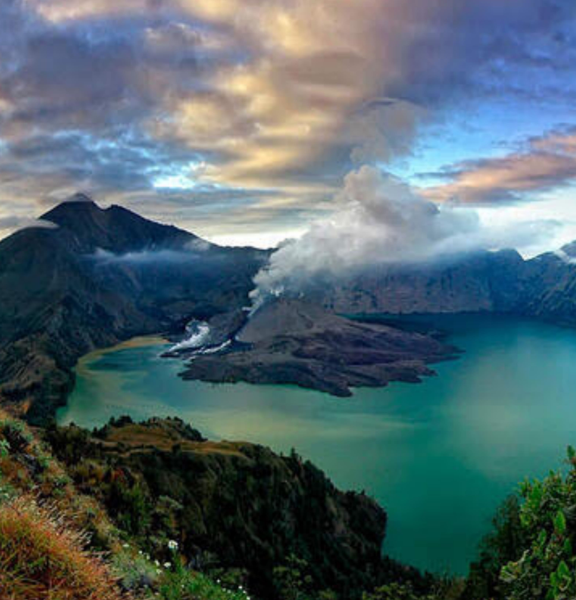
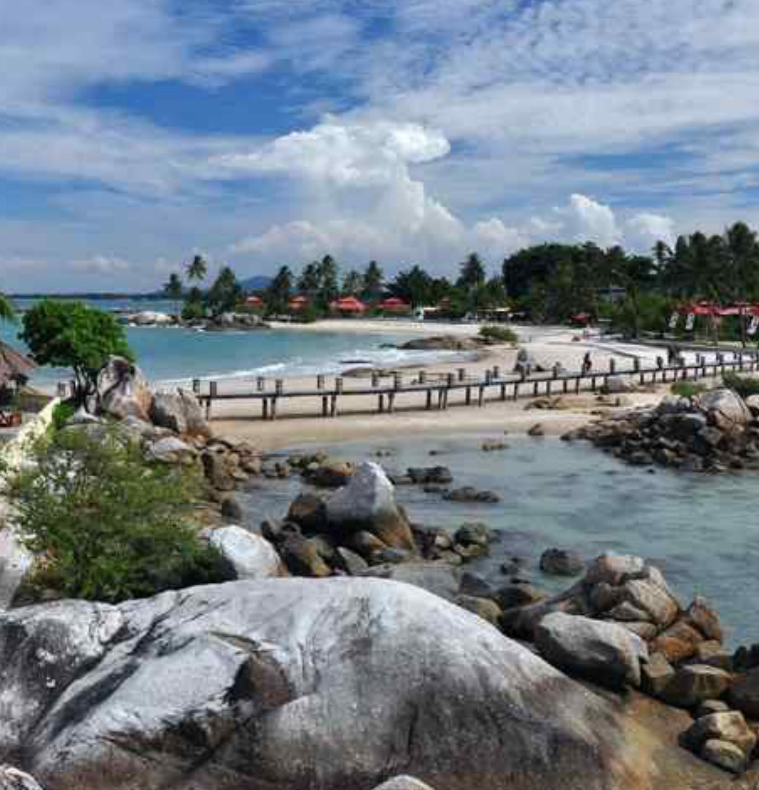
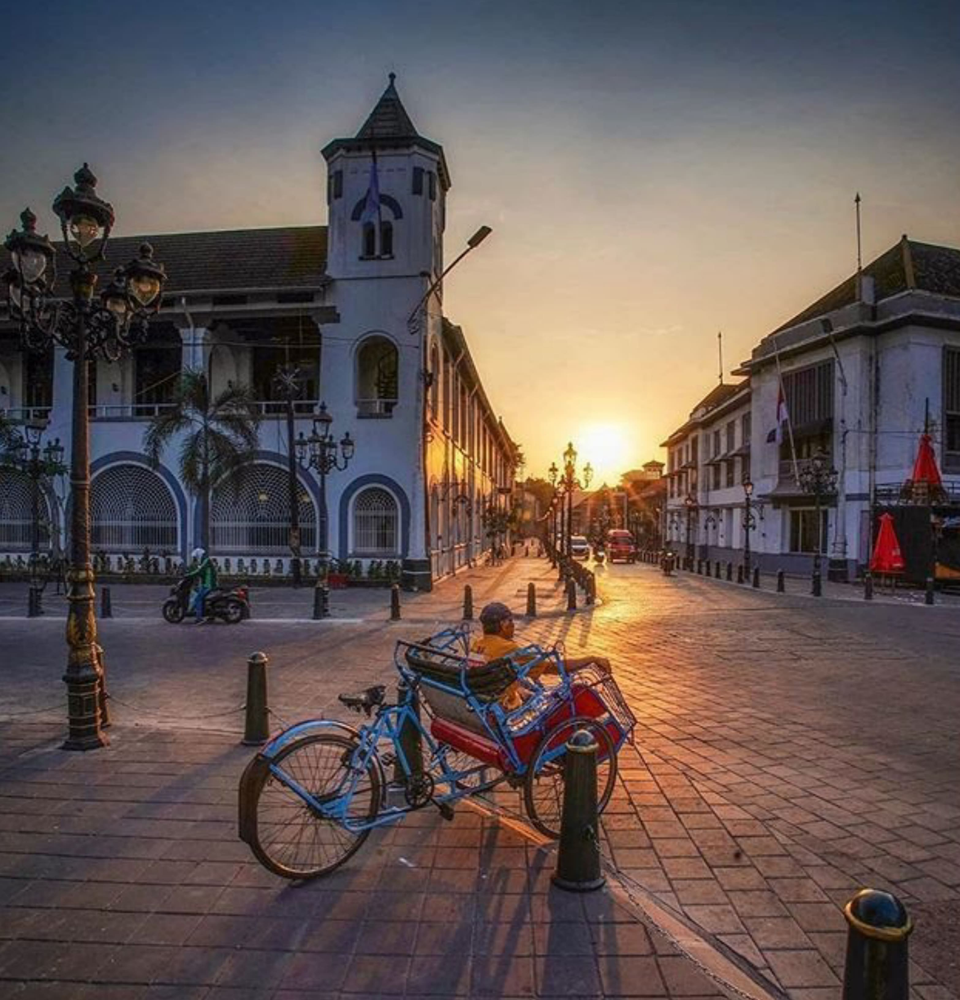

Service
Ingin Promosi Tempat Wisata?
Hubungi Kami
Hubungi Kami melalui kontak yang sudah tersedia.
Isi Formulir
Isi formulir sesuai data yang dibutuhkan.
Pilih Paket
Pilih varian paket promosi yang kami tawarkan.
Pembayaran
Lakukan pembayaran sesuai dengan jumlah nominal tagihan.

Tempat Wisata
Paling Populer
Pura Agung Besakih
Lihat Detail
Bali, Jawa
Timur
Pantai Kartini
Lihat Detail
Jepara, Jawa
Tengah
Candi Prambanan
Lihat Detail
Yogyakarta, Jawa
Tengah
Tempat Wisata
Terbaru

Gunung Rinjani
Lihat Detail
Pulau Lombok,
Nusa Tenggara Barat
Kepulauan Derawan
Lihat Detail
Berau,
Kalimantan Timur.

Pantai Parai Tenggiri
Lihat Detail
Bangka,
Kepulauan Bangka Belitung
Karimunjawa
Lihat Detail
Jepara, Jawa
Tengah

Kota Lama
Lihat Detail
Semarang, Jawa
Tengah.
Lawang Sewu
Lihat Detail
Semarang, Jawa
Tengah


Kontak Kami
Platform online yang menyajikan informasi tempat wisata terbaik di Indonesia.
Support
Lainnya
© 2023 BubbleMaps, All rights reserved